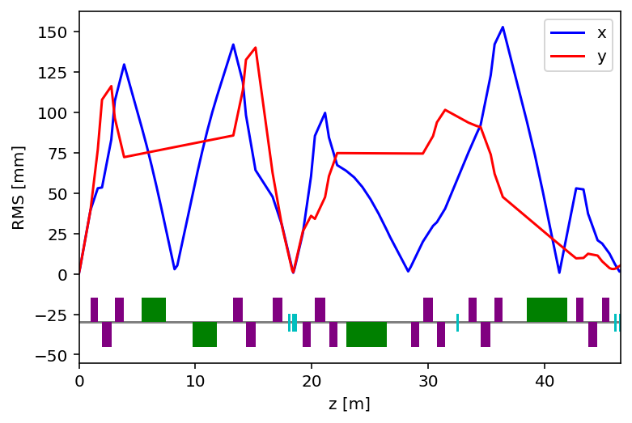

Online Modeling¶
[1]:
from phantasy import MachinePortal
[2]:
mp = MachinePortal("ARIS", "F1")
[13:05:08.113] INFO: phantasy.library.operation.core: Load new machine: 'ARIS', segment: 'F1'
[13:05:08.149] INFO: phantasy.library.parser.config: Importing ARIS from /home/tong/Dropbox/phantasy-project/phantasy-machines/ARIS
[13:05:08.150] INFO: phantasy.library.parser.config: Loading machine configuration from /home/tong/Dropbox/phantasy-project/phantasy-machines/ARIS/phantasy.ini
[13:05:08.151] INFO: phantasy.library.operation.lattice: Loading segment: 'F1'
[13:05:08.153] WARNING: phantasy.library.operation.lattice: Default UNICORN policy will be applied.
[13:05:08.156] WARNING: phantasy.library.operation.lattice: Default device polarity will be applied.
[13:05:08.157] INFO: phantasy.library.operation.lattice: Loading PV data from CSV/SQLite: /home/tong/Dropbox/phantasy-project/phantasy-machines/ARIS/presp/channels.csv
[13:05:08.158] INFO: phantasy.library.pv.datasource: Set source to be CSV table: channels.csv.
[13:05:08.183] INFO: phantasy.library.operation.lattice: Model data directory: /home/tong/phantasy_data/20210623/model_data/data_130508
[13:05:08.184] INFO: phantasy.library.operation.lattice: Found 251 PVs in 'F1'.
[13:05:08.230] INFO: phantasy.library.operation.lattice: 'F1' has 46 elements
[3]:
lat = mp.work_lattice_conf
[4]:
lat
[4]:
| Name | Family | Position | Length | |
|---|---|---|---|---|
| 0 | FS_F1S1:Q_D1013 | QUAD | 1.2999999999999998 | 0.623673 |
| 1 | FS_F1S1:Q_D1024 | QUAD | 2.375 | 0.798 |
| 2 | FS_F1S1:S_D1024 | SEXT | 2.774 | 0.0 |
| 3 | FS_F1S1:Q_D1035 | QUAD | 3.4749999999999996 | 0.798 |
| 4 | FS_F1S1:S_D1035 | SEXT | 3.874 | 0.0 |
| 5 | FS_F1S1:DV_D1064 | BEND | 6.447198 | 2.094395 |
| 6 | FS_F1S1:DV_D1108 | BEND | 10.817592999999999 | 2.094395 |
| 7 | FS_F1S1:Q_D1137 | QUAD | 13.66379 | 0.820888 |
| 8 | FS_F1S1:S_D1137 | SEXT | 14.074234 | 0.0 |
| 9 | FS_F1S1:Q_D1148 | QUAD | 14.75149 | 0.820888 |
| 10 | FS_F1S1:S_D1148 | SEXT | 15.161934 | 0.0 |
| 11 | FS_F1S1:Q_D1170 | QUAD | 17.03879 | 0.820888 |
| 12 | FS_F1S1:S_D1170 | SEXT | 17.449234 | 0.0 |
| 13 | FS_F1S1:PM_D1181 | PM | 18.05672 | 0.05 |
| 14 | FS_F1S1:VD_D1184 | VD | 18.43172 | 0.05 |
| 15 | FS_F1S1:PM_D1185 | PM | 18.60172 | 0.05 |
| 16 | FS_F1S2:Q_D1195 | QUAD | 19.629274000000002 | 0.705757 |
| 17 | FS_F1S2:S_D1195 | SEXT | 19.982153 | 0.0 |
| 18 | FS_F1S2:Q_D1207 | QUAD | 20.751494 | 0.873737 |
| 19 | FS_F1S2:S_D1207 | SEXT | 21.188363 | 0.0 |
| 20 | FS_F1S2:Q_D1218 | QUAD | 21.873714000000003 | 0.705757 |
| 21 | FS_F1S2:S_D1218 | SEXT | 22.226593 | 0.0 |
| 22 | FS_F1S2:DV_D1246 | BEND | 24.741597 | 3.490659 |
| 23 | FS_F1S2:Q_D1288 | QUAD | 28.904032 | 0.705757 |
| 24 | FS_F1S2:S_D1288 | SEXT | 29.25691 | 0.0 |
| 25 | FS_F1S2:Q_D1299 | QUAD | 30.026252000000003 | 0.873737 |
| 26 | FS_F1S2:S_D1299 | SEXT | 30.46312 | 0.0 |
| 27 | FS_F1S2:Q_D1311 | QUAD | 31.148472 | 0.705757 |
| 28 | FS_F1S2:S_D1311 | SEXT | 31.50135 | 0.0 |
| 29 | FS_F1S2:VD_D1324 | VD | 32.529722 | 0.05 |
| 30 | FS_F1S2:Q_D1338 | QUAD | 33.910972 | 0.705757 |
| 31 | FS_F1S2:S_D1338 | SEXT | 34.26385 | 0.0 |
| 32 | FS_F1S2:Q_D1349 | QUAD | 35.033192 | 0.873737 |
| 33 | FS_F1S2:S_D1349 | SEXT | 35.47006 | 0.0 |
| 34 | FS_F1S2:Q_D1361 | QUAD | 36.155412 | 0.705757 |
| 35 | FS_F1S2:S_D1361 | SEXT | 36.50829 | 0.0 |
| 36 | FS_F1S2:DV_D1402 | BEND | 40.317845 | 3.490659 |
| 37 | FS_F1S2:Q_D1430 | QUAD | 43.121006 | 0.629436 |
| 38 | FS_F1S2:S_D1430 | SEXT | 43.435724 | 0.0 |
| 39 | FS_F1S2:Q_D1441 | QUAD | 44.239726000000005 | 0.819979 |
| 40 | FS_F1S2:S_D1441 | SEXT | 44.649716 | 0.0 |
| 41 | FS_F1S2:Q_D1453 | QUAD | 45.358446 | 0.629436 |
| 42 | FS_F1S2:S_D1453 | SEXT | 45.673164 | 0.0 |
| 43 | FS_F1S2:PM_D1460 | PM | 46.1382 | 0.03175 |
| 44 | FS_F1S2:PM_D1464 | PM | 46.544599999999996 | 0.03175 |
| 45 | FS_F1S2:VD_D1466 | VD | 46.686077999999995 | 0.075 |
[5]:
q1 = lat[0]
[6]:
q1.B2
[6]:
7.704751678630285
[7]:
lat.sync_settings()
[13:05:27.527] INFO: phantasy.library.lattice.lattice: Sync settings from 'control' to 'model'.
[8]:
latfile, fm_online = lat.run()
[13:05:34.229] ERROR: flame_utils.core.model: expected str, bytes or os.PathLike object, not NoneType
[13:05:34.230] WARNING: flame_utils.core.model: ModelFlame: Lattice file is not valid, do it manually.
[9]:
latfile
[9]:
'/home/tong/phantasy_data/20210623/model_data/data_130508/model_130534.lat'
[10]:
from flame_utils import hplot
[11]:
hplot('xrms', 'yrms', machine=fm_online)
